Chapter 5 Classification
- In regression the response variable \(Y\) is quantitative.
- If \(Y\) is qualitative (indicate classes), classification techniques (classifiers) use predictors to predict in which class (category) the object should be assigned.
- Qualitative variable take values in an unordered set \(C\), such as
\[ eye \,\,\, color \in \{{brown,blue,green\}} \] - Given a feature vector \(X\) and a qualitative response \(Y\) taking values in the set \(C\), the classification task is to build a function \(C(X)\) that takes as input the feature vector \(X\) and predicts its value for \(Y\); i.e. \(C(X)\in C\).
- Some examples:
- Medical condition of a person arrived into the emergency room.
- Spam e-mail on the basis of some key words, etc.
- Fraudulent credit card transaction on the basis of IP address, past transactions, etc.
- Medical condition of a person arrived into the emergency room.
- Often we are more interested in estimating the probabilities that \(X\) belongs to each category in \(C\).
- For example, it is more valuable to have an estimate of the probability that an insurance claim is fraudulent, than a classification fraudulent or not
- The figure below illustrates (sub sample from a simulated data set) credit card defaults (the dependent variable default is categorical (orange = Yes, blue = No)).
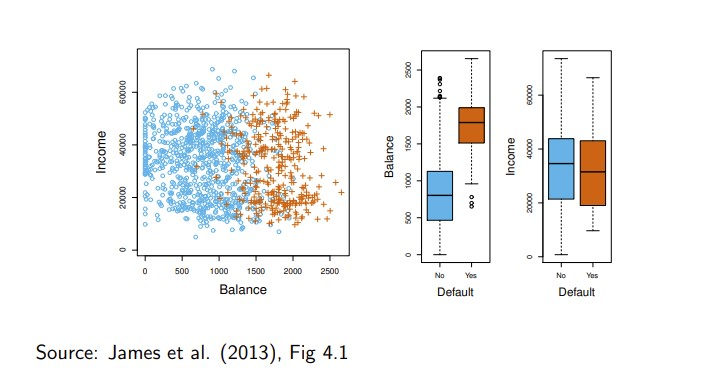
Can we use linear regression?
- Suppose for the default classification task that we code
\[ Y= \begin{cases} 0\,\,\, if \,\,\, No \\ 1\,\,\, if\,\,\, Yes\\ \end{cases} \]
- Can we simply perform a linear regression of \(Y\) on \(X\) and classify as Yes if \(\hat{Y}>0.5?\)
- In this case of a binary outcome, linear regression does a good job as a classifier, and is equivalent to linear discriminant analysis which we discuss later.
- Since in the population \(E(Y|X=x)=Pr(Y=1|X=x)\), we might think that regression is perfect for this task.
- However, linear regression might produce probabilities less than zero or bigger than one. Logistic regression is more appropriate.
- For a two-class response variables with binary 0/1 coding, the conditional expectation given explanatory variables \(X\) becomes
\[ E(Y|X) = 0 · P(Y = 0|X) + 1 · P(Y = 1|X) = P(Y = 1|X) \]
i.e., conditional probability which by definition is between zero and one.
- To satisfy this restriction other than linear regression for
\(E(Y|X) = f(X)\) must be adopted.
- Because, here \(E(Y|X)\) is probability, it is natural to select \(f\) as a probability function.
- Two most popular are logit (called also logistic ) and probit probability functions.
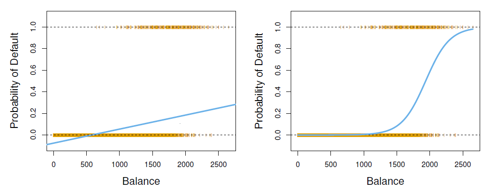
- The orange marks indicate the response \(Y\), either 0 or 1.
- Linear regression does not estimate \(Pr(T=1|X)\) well.
- Logistic regression seems well suited to the task.
- Now suppose we have a response variable with three possible values.
- A patient presents at the emergency room, and we must classify them according to their symptoms.
\[ Y= \begin{cases} 1\,\,\, if \,\,\, stroke \\ 2\,\,\, if\,\,\, drug \,\,\, overdose\\ 3\,\,\, if\,\,\, epileptic \,\,\, seizure\\ \end{cases} \]
This coding suggests an ordering, and in fact implies that the difference between stroke and drug overdose is the same as between drug overdose and epileptic seizure.
Linear regression is not appropriate here.
- Multiclass logistic regression or discriminant analysis are more appropriate.
Examples of classifiers are:
- logistic regression
- discriminant analysis
- K-nearest neighbors
- generalized additive models
- trees
- random forests
- support vector machines.
5.1 Logit and Probit Models
Simple logistic regression
To emphasize the probabilistic nature, denote \(E(Y|X) = p(X)\).
Let’s write \(p(X)=Pr(Y=1|X)\) for short and consider using balance to predict default.
The logit (logistic regression) model is defined as
\[ p(X) = \frac{e^{\beta_0+\beta_1X}}{1+e^{\beta_0+\beta_1X}} \]
(\(e\approx 2.71828\) is a mathematical constant [Euler’s number])
It is easy to see that no matter what values \(\beta_0, \beta_1\) or \(X\) take, \(p(X)\) will have values between 0 and 1.
A bit of rearrangement gives
\[ log\big(\frac{p(X)}{1-p(X)}\big)=\beta_0 +\beta_1X \]
- This monotone transformation is called the log odds or logit transformation of \(p(X)\). (by log we mean natural log: ln)
logistic regression ensures that our estimate for \(p(X)\) lies between 0 and 1.
We use maximum likelihood (ML) to estimate the parameters (\(\beta\)s).
\[ l(\beta_0, \beta_1)=\Pi_{i:y_i=1}p(x_i)\Pi_{i:y_0=0}(1-p(x_i)) \]
- This likelihood gives the probability of the observed zeros and ones in the data.
- We pick \(\beta_0\) and \(\beta_1\) to maximize the likelihood of the observed data.
- Most statistical packages can fit linear logistic regression models by maximum likelihood. In R we use the glm function.
library(ISLR2)
## logit model
fit_logit <- glm(default ~ balance, data = Default, family = binomial(link = "logit"))
summary(fit_logit) # print results##
## Call:
## glm(formula = default ~ balance, family = binomial(link = "logit"),
## data = Default)
##
## Deviance Residuals:
## Min 1Q Median 3Q Max
## -2.2697 -0.1465 -0.0589 -0.0221 3.7589
##
## Coefficients:
## Estimate Std. Error z value Pr(>|z|)
## (Intercept) -1.065e+01 3.612e-01 -29.49 <2e-16 ***
## balance 5.499e-03 2.204e-04 24.95 <2e-16 ***
## ---
## Signif. codes: 0 '***' 0.001 '**' 0.01 '*' 0.05 '.' 0.1 ' ' 1
##
## (Dispersion parameter for binomial family taken to be 1)
##
## Null deviance: 2920.6 on 9999 degrees of freedom
## Residual deviance: 1596.5 on 9998 degrees of freedom
## AIC: 1600.5
##
## Number of Fisher Scoring iterations: 8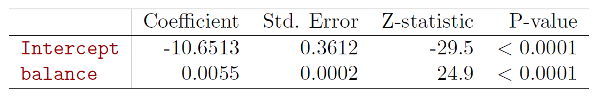
- What is our estimated probability of default for someone with a balance of $1000?
\[ \hat{p}(X)=\frac{e^{\hat{\beta}_0+\hat{\beta}_1X}}{1+e^{\hat{\beta}_0+\hat{\beta}_1X}}=\frac{e^{-10.6513+0.0055\times 1000}}{1+e^{-10.6513+0.0055\times 1000}}=0.006 \]
- With a balance of $2000?
\[ \hat{p}(X)=\frac{e^{\hat{\beta}_0+\hat{\beta}_1X}}{1+e^{\hat{\beta}_0+\hat{\beta}_1X}}=\frac{e^{-10.6513+0.0055\times 2000}}{1+e^{-10.6513+0.0055\times 2000}}=0.586 \]
- Lets do it again, using student as the predictor.
library(ISLR2)
## logit model
fit_logit <- glm(default ~ factor(student), data = Default, family = binomial(link = "logit"))
summary(fit_logit) # print results##
## Call:
## glm(formula = default ~ factor(student), family = binomial(link = "logit"),
## data = Default)
##
## Deviance Residuals:
## Min 1Q Median 3Q Max
## -0.2970 -0.2970 -0.2434 -0.2434 2.6585
##
## Coefficients:
## Estimate Std. Error z value Pr(>|z|)
## (Intercept) -3.50413 0.07071 -49.55 < 2e-16 ***
## factor(student)Yes 0.40489 0.11502 3.52 0.000431 ***
## ---
## Signif. codes: 0 '***' 0.001 '**' 0.01 '*' 0.05 '.' 0.1 ' ' 1
##
## (Dispersion parameter for binomial family taken to be 1)
##
## Null deviance: 2920.6 on 9999 degrees of freedom
## Residual deviance: 2908.7 on 9998 degrees of freedom
## AIC: 2912.7
##
## Number of Fisher Scoring iterations: 6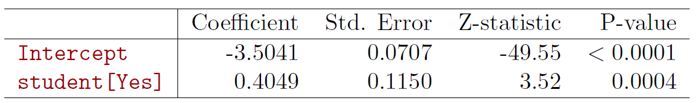
\[ \hat{Pr}(default=Yes|student=Yes)==\frac{e^{-3.5041+0.4049\times 1}}{1+e^{-3.5041+0.4049\times 1}}=0.0431 \]
\[ \hat{Pr}(default=Yes|student=No)==\frac{e^{-3.5041+0.4049\times 0}}{1+e^{-3.5041+0.4049\times 0}}=0.0292 \]
Multiple logistic regression
- The logit (logistic regression) model is defined as
\[ p(X) = \frac{e^{X^T\beta}}{1+e^{X^T\beta}} \]
where \(X^T\beta = \beta_{0} + \beta_{1}X_{1} + \cdots + \beta_{p}X_{p}\).
- We can write
\[ log \ \Bigg ({p(X)\over1 − p(X)}\Bigg) = \beta_{0} + \beta_{1}X_{1} + · · · + \beta_{p}X_{p} \]
Probit model
- In the probit model the adopted underlying probability model is assumed to be normal, so that
\[ P(Y = 1|X) =\Phi(X^Tβ) \]
where
\[ \Phi(z) = \int_{-\infty}^z \frac{1}{\sqrt{2\pi}}e^{-\frac{1}{2}u^2}\ du \]
is the standard normal cumulative distribution function.
Again the \(\beta\)-parameters are estimated by the ML method.
Thus for the logit transformation
\[ G(z) = \frac{e^{z}}{1 + e^z} = \frac{1}{1 + e^{-z}} = \int_{-\infty}^z \frac{e^{-u}}{(1+e^{-u})^2}du \]
while for probit in place of \(G(z)\) is the normal cumulative distribution function (cdf) \(\Phi(z)\).
- As both are probability function they assume values between zero and one, and are pretty much similar looking.
par(mfrow = c(1, 2))
curve(expr = exp(x) / (1 + exp(x)), from = -3.5, to = 3.5, col = "steel blue", ylim = c(0, 1),
xlab = "z", ylab = "Logistic probability", main = "Logistic Cumulative\nDistribution",
cex.main = 1)
abline(h = 0, col = "light gray", lty = "dashed") # lower limit
abline(h = 1, col = "light gray", lty = "dashed") # upper limit
curve(expr = pnorm(x, mean = 0, sd = 1), from = -3.5, to = 3.5, col = "steel blue",
xlab = "z", ylab = "Normal probability", main = "Normal Cumulative\nDistribution",
cex.main = 1)
abline(h = 0, col = "light gray", lty = "dashed") # lower limit
abline(h = 1, col = "light gray", lty = "dashed") # upper limit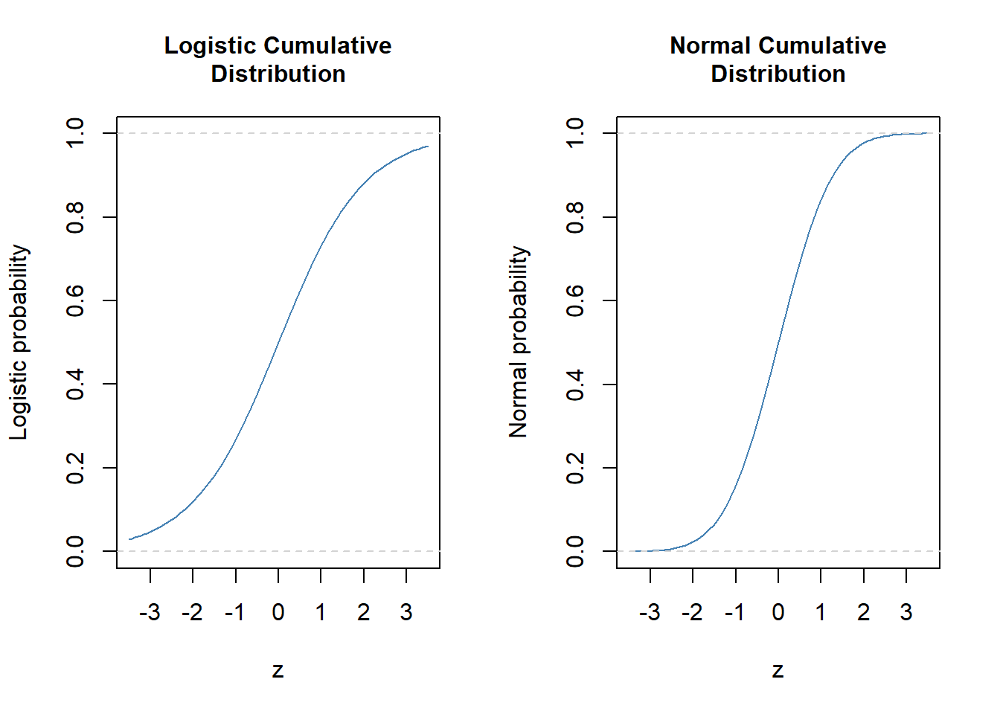
#dev.print(pdf, file = "logit-probit.pdf")Example
- Women attendance to labor force.
## install.packages("wooldridge", repos = "https://cloud.r-project.org")
library(wooldridge) # make the package available
## library(help = wooldridge) # names in ht package, here we use mroz
#help(mroz) # description of the variables in the used data set
wdf <- mroz
head(wdf) # a few first lines## inlf hours kidslt6 kidsge6 age educ wage repwage hushrs husage huseduc
## 1 1 1610 1 0 32 12 3.3540 2.65 2708 34 12
## 2 1 1656 0 2 30 12 1.3889 2.65 2310 30 9
## 3 1 1980 1 3 35 12 4.5455 4.04 3072 40 12
## 4 1 456 0 3 34 12 1.0965 3.25 1920 53 10
## 5 1 1568 1 2 31 14 4.5918 3.60 2000 32 12
## 6 1 2032 0 0 54 12 4.7421 4.70 1040 57 11
## huswage faminc mtr motheduc fatheduc unem city exper nwifeinc lwage
## 1 4.0288 16310 0.7215 12 7 5.0 0 14 10.910060 1.21015370
## 2 8.4416 21800 0.6615 7 7 11.0 1 5 19.499981 0.32851210
## 3 3.5807 21040 0.6915 12 7 5.0 0 15 12.039910 1.51413774
## 4 3.5417 7300 0.7815 7 7 5.0 0 6 6.799996 0.09212332
## 5 10.0000 27300 0.6215 12 14 9.5 1 7 20.100058 1.52427220
## 6 6.7106 19495 0.6915 14 7 7.5 1 33 9.859054 1.55648005
## expersq
## 1 196
## 2 25
## 3 225
## 4 36
## 5 49
## 6 1089## logit
fit_logit <- glm(inlf ~ huswage + educ + exper + I(exper^2) + age + kidslt6 + kidsge6, data = wdf, family = binomial(link = "logit"))
summary(fit_logit) # print results##
## Call:
## glm(formula = inlf ~ huswage + educ + exper + I(exper^2) + age +
## kidslt6 + kidsge6, family = binomial(link = "logit"), data = wdf)
##
## Deviance Residuals:
## Min 1Q Median 3Q Max
## -2.2086 -0.8990 0.4481 0.8447 2.1953
##
## Coefficients:
## Estimate Std. Error z value Pr(>|z|)
## (Intercept) 0.592500 0.853042 0.695 0.48732
## huswage -0.043803 0.021312 -2.055 0.03985 *
## educ 0.209272 0.042568 4.916 8.83e-07 ***
## exper 0.209668 0.031963 6.560 5.39e-11 ***
## I(exper^2) -0.003181 0.001013 -3.141 0.00168 **
## age -0.091342 0.014460 -6.317 2.67e-10 ***
## kidslt6 -1.431959 0.202233 -7.081 1.43e-12 ***
## kidsge6 0.047089 0.074284 0.634 0.52614
## ---
## Signif. codes: 0 '***' 0.001 '**' 0.01 '*' 0.05 '.' 0.1 ' ' 1
##
## (Dispersion parameter for binomial family taken to be 1)
##
## Null deviance: 1029.75 on 752 degrees of freedom
## Residual deviance: 805.85 on 745 degrees of freedom
## AIC: 821.85
##
## Number of Fisher Scoring iterations: 4## probit
fit_probit <- glm(inlf ~ huswage + educ + exper + I(exper^2) + age + kidslt6 + kidsge6, data = wdf, family = binomial(link = "probit"))
summary(fit_probit)##
## Call:
## glm(formula = inlf ~ huswage + educ + exper + I(exper^2) + age +
## kidslt6 + kidsge6, family = binomial(link = "probit"), data = wdf)
##
## Deviance Residuals:
## Min 1Q Median 3Q Max
## -2.2495 -0.9127 0.4288 0.8502 2.2237
##
## Coefficients:
## Estimate Std. Error z value Pr(>|z|)
## (Intercept) 0.3606454 0.5045248 0.715 0.47472
## huswage -0.0255438 0.0126530 -2.019 0.04351 *
## educ 0.1248347 0.0249191 5.010 5.45e-07 ***
## exper 0.1260736 0.0187091 6.739 1.60e-11 ***
## I(exper^2) -0.0019245 0.0005987 -3.214 0.00131 **
## age -0.0547298 0.0083918 -6.522 6.95e-11 ***
## kidslt6 -0.8650224 0.1177382 -7.347 2.03e-13 ***
## kidsge6 0.0285102 0.0438420 0.650 0.51550
## ---
## Signif. codes: 0 '***' 0.001 '**' 0.01 '*' 0.05 '.' 0.1 ' ' 1
##
## (Dispersion parameter for binomial family taken to be 1)
##
## Null deviance: 1029.75 on 752 degrees of freedom
## Residual deviance: 804.69 on 745 degrees of freedom
## AIC: 820.69
##
## Number of Fisher Scoring iterations: 4Qualitatively the results are similar!
Below are probability plots as functions of experience evaluated at the mean of other explanatory variables.
The predictions are virtually identical.
## for the purpose generate data to be utilized at plot of experience at the mean of other variables
xx <- data.frame(exper = seq(from = min(wdf$exper, na.rm = TRUE),
to = max(wdf$exper, na.rm = TRUE), length = 100),
huswage = rep(mean(wdf$huswage, na.rm = TRUE), times = 100),
educ = rep(mean(wdf$educ, na.rm = TRUE), times = 100),
age = rep(mean(wdf$age, na.rm = TRUE), times = 100),
kidslt6 = rep(mean(wdf$kidslt6, na.rm = TRUE), times = 100),
kidsge6 = rep(mean(wdf$kidsge6, na.rm = TRUE), times = 100)) # dummy data set
pred_logit <- predict(fit_logit, newdata = xx, type = "response") # logit probability predictions (see help(predict.glm))
pred_probit <- predict(fit_probit, newdata = xx, type = "response") # probit probability predictions
plot(x = xx[, 1], y = pred_logit, type = "l", col = "blue",
xlab = "Experience (years)", ylab = "Probability",
ylim = c(0, 1),
main = "Logit and Probit Predictions for\nProbabilities of Labor Force Attentance") # logit
lines(x = xx[, 1], y = pred_probit, col = "red")
legend("bottomright", legend = c("Logit", "Probit"), lwd = c(2, 2), col = c("blue", "red"), bty = "n")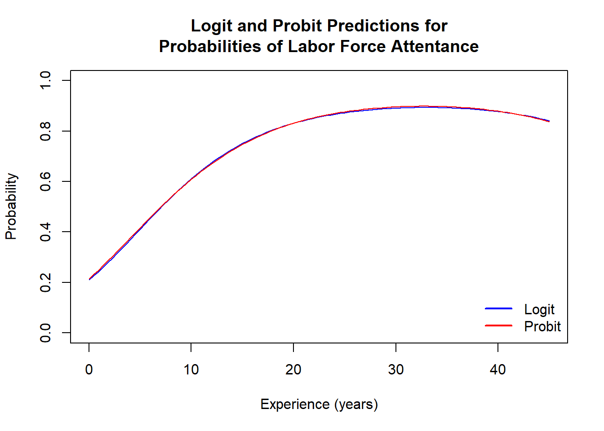
5.2 Confounding
library(ISLR2)
## logit model
fit_logit <- glm(default ~ balance + income+ factor(student), data = Default, family = binomial(link = "logit"))
summary(fit_logit) # print results##
## Call:
## glm(formula = default ~ balance + income + factor(student), family = binomial(link = "logit"),
## data = Default)
##
## Deviance Residuals:
## Min 1Q Median 3Q Max
## -2.4691 -0.1418 -0.0557 -0.0203 3.7383
##
## Coefficients:
## Estimate Std. Error z value Pr(>|z|)
## (Intercept) -1.087e+01 4.923e-01 -22.080 < 2e-16 ***
## balance 5.737e-03 2.319e-04 24.738 < 2e-16 ***
## income 3.033e-06 8.203e-06 0.370 0.71152
## factor(student)Yes -6.468e-01 2.363e-01 -2.738 0.00619 **
## ---
## Signif. codes: 0 '***' 0.001 '**' 0.01 '*' 0.05 '.' 0.1 ' ' 1
##
## (Dispersion parameter for binomial family taken to be 1)
##
## Null deviance: 2920.6 on 9999 degrees of freedom
## Residual deviance: 1571.5 on 9996 degrees of freedom
## AIC: 1579.5
##
## Number of Fisher Scoring iterations: 8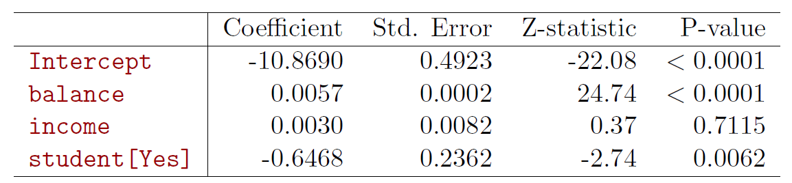
- Why is coefficient for student negative, while it was positive before?
Example of confounding
- Credit default example.
library(ISLR2) # load ISLR library
head(Default) # A few first lines from the Default data set## default student balance income
## 1 No No 729.5265 44361.625
## 2 No Yes 817.1804 12106.135
## 3 No No 1073.5492 31767.139
## 4 No No 529.2506 35704.494
## 5 No No 785.6559 38463.496
## 6 No Yes 919.5885 7491.559str(Default) # Structure of the data frame## 'data.frame': 10000 obs. of 4 variables:
## $ default: Factor w/ 2 levels "No","Yes": 1 1 1 1 1 1 1 1 1 1 ...
## $ student: Factor w/ 2 levels "No","Yes": 1 2 1 1 1 2 1 2 1 1 ...
## $ balance: num 730 817 1074 529 786 ...
## $ income : num 44362 12106 31767 35704 38463 ...##
## Simple logit of default on student satutus
fit1 <- glm(default ~ student, data = Default, family = binomial)
summary(fit1)##
## Call:
## glm(formula = default ~ student, family = binomial, data = Default)
##
## Deviance Residuals:
## Min 1Q Median 3Q Max
## -0.2970 -0.2970 -0.2434 -0.2434 2.6585
##
## Coefficients:
## Estimate Std. Error z value Pr(>|z|)
## (Intercept) -3.50413 0.07071 -49.55 < 2e-16 ***
## studentYes 0.40489 0.11502 3.52 0.000431 ***
## ---
## Signif. codes: 0 '***' 0.001 '**' 0.01 '*' 0.05 '.' 0.1 ' ' 1
##
## (Dispersion parameter for binomial family taken to be 1)
##
## Null deviance: 2920.6 on 9999 degrees of freedom
## Residual deviance: 2908.7 on 9998 degrees of freedom
## AIC: 2912.7
##
## Number of Fisher Scoring iterations: 6## default on student and balance
fit2 <- glm(default ~ student + balance, data = Default, family = binomial)
summary(fit2)##
## Call:
## glm(formula = default ~ student + balance, family = binomial,
## data = Default)
##
## Deviance Residuals:
## Min 1Q Median 3Q Max
## -2.4578 -0.1422 -0.0559 -0.0203 3.7435
##
## Coefficients:
## Estimate Std. Error z value Pr(>|z|)
## (Intercept) -1.075e+01 3.692e-01 -29.116 < 2e-16 ***
## studentYes -7.149e-01 1.475e-01 -4.846 1.26e-06 ***
## balance 5.738e-03 2.318e-04 24.750 < 2e-16 ***
## ---
## Signif. codes: 0 '***' 0.001 '**' 0.01 '*' 0.05 '.' 0.1 ' ' 1
##
## (Dispersion parameter for binomial family taken to be 1)
##
## Null deviance: 2920.6 on 9999 degrees of freedom
## Residual deviance: 1571.7 on 9997 degrees of freedom
## AIC: 1577.7
##
## Number of Fisher Scoring iterations: 8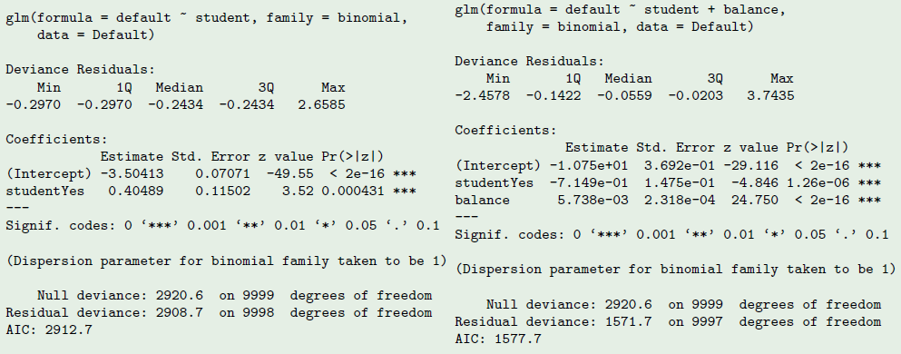
When students are regressed alone, the sign is positive, and when balance is included, the sign is negative!
The reason for this seemingly contradicting result is that students tend to have higher balance than non-students. Therefore students are on average defaulting more likely.
However, at each level of balance, students tend to default less than non-students.
Due to the correlation of student and balance the effects in single (logit) regression are confounded and show up as positive effect due to the higher average balance for students.
- Logit probabilities for Students and Non-Students.
par(mfrow = c(1, 2)) # split widow to two areas vertically
plot(c(500, max(Default$balance)), c(0, 1), type = "n",
xlab = "Balance", ylab = "Probability")
bvals <- seq(500, max(Default$balance), length = 200) # range of default values
lines(x = bvals,
y = predict(fit2, type = "response",
newdata = data.frame(balance = bvals, student = factor(rep("Yes", length(bvals))))),
col = "orange") ## default probability curve for students
lines(x = bvals,
y = predict(fit2, type = "response",
newdata = data.frame(balance = bvals, student = factor(rep("No", length(bvals))))),
col = "steel blue") # non-students
abline(a = mean(Default$default[Default$student == "Yes"] == "Yes"), b = 0,
lty = "dashed", col = "orange") # average default rate for students
abline(a = mean(Default$default[Default$student == "No"] == "Yes"), b = 0,
lty = "dashed", col = "blue") # average default rate for non-students
abline(a = 0, b = 0, col = "light gray") # horizontal line at probability 0
abline(a = 1, b = 0, col = "light gray") # horizontal line at probability 1
legend("topleft", legend = c("Student", "Non-strudents",
"Student, average default rate",
"Non-student, average default\nrate"),
lty = c("solid", "solid", "dashed", "dashed"),
col = c("orange", "steel blue", "orange", "steel blue"), bty = "n", cex = .8)
## Box plots
plot(x = Default$student, y = Default$balance, col = c("steel blue", "orange"),
xlab = "Student", ylab = "Balance")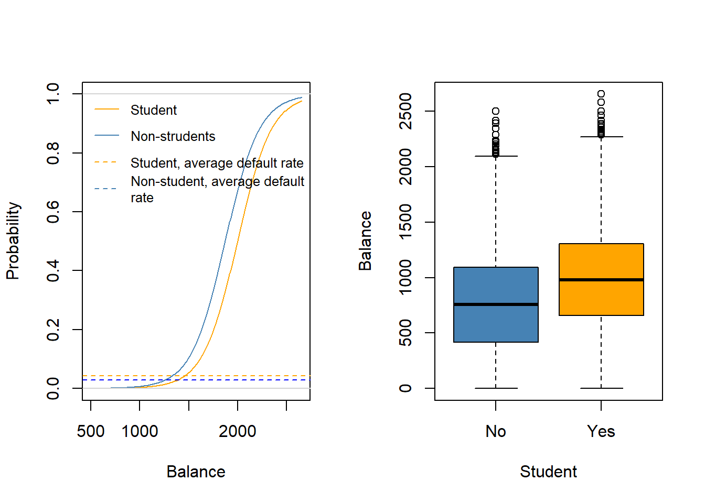
Example: South African Heart Disease
160 cases of MI (myocardial infarction) and 302 controls (all male in age reange 15-64), from Western Cape, South Africa in early 80s.
Overall prevalence very high in this region: 5.1%.
Measurements on seven predictors (risk factors), shown in scatterplot matrix.
Goal is to identify relative strengths and directions of risk factors.
This was part of an intervention study aimed at educating the public on healthier diets.
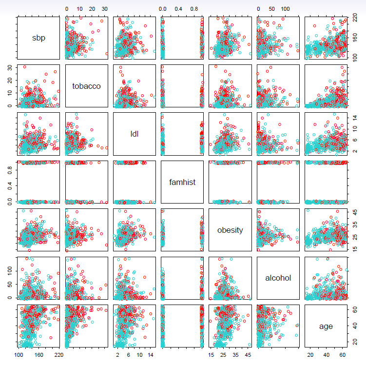
- Scatterplot matrix of the South African Heart Disease data.
- The response is color coded - The cases (MI) are red, the controls turquoise.
- famhist is a binary variable, with 1 indicating family history of MI
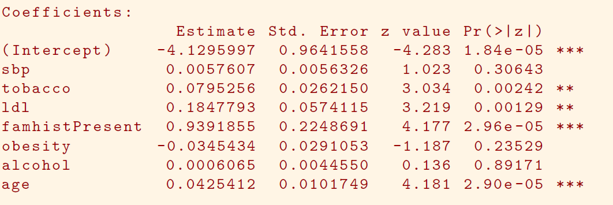
In South African data, there are 160 cases, 302 controls - \(\tilde{\pi}=0.35\) are cases
- Yet the prevalence of MI in this region is \(\pi=0.05\)
With case-control samples, we can estimate the regression parameters \(\beta_j\) accurately (if our model is correct); the constant term \(\beta_0\) is incorrect.
We can correct the estimated intercept by a simple transformation
\[ \hat{\beta}_0^* = \hat{\beta}_0 +log\frac{\pi}{1-\pi}-log\frac{\tilde{\pi}}{1-\tilde{\pi}} \]
- Often cases are rare and we take them all; up to five times that number of controls is sufficient.
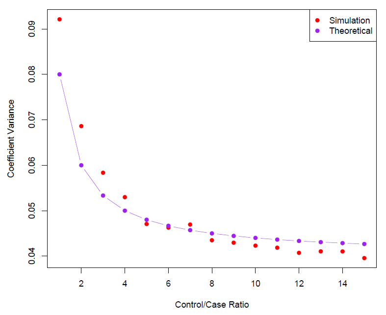
- Sampling more controls than cases reduces the variance of the parameter estimates.
- But after a ratio of about 5 to 1 the variance reduction flattens out.
5.3 Logit Model for Multiple Classes
The logit model has multiple-class extensions, i.e., when the response has more than two classes.
It is easily generalized to more than two classes.
One version (used in the R package glmnet) has the symmetric form
\[ Pr(Y=k|X)=\frac{e^{\beta_{ok}+\beta_{1k}X_1 +\cdots +\beta_{pk}X_p}}{\sum_{l=1}^K e^{\beta_{ol}+\beta_{1l}X_1 +\cdots +\beta_{pl}X_p}} \] - Here there is a linear function for each class.
Multiclass logistic regression is also referred to as multinomial regression.
However, seems that these extensions are not used that often.
Instead discriminant analysis is more popular in these instances.
5.4 Discriminant Analysis
- Discriminant analysis is popular in particular when there are more than two classes in the response variable.
- If the underlying populations are normal and have the same covariance matrices, linear discriminant analysis (LDA) can be used.
- If the (population) covariance matrices differ between classes, quadratic discriminant analysis (QDA) is used.
5.4.1 Bayes Theorem for Classification
Here the approach is to model the distribution of \(X\) in each of the classes separately, and then use Bayes theorem to flip things around and obtain \(Pr(Y|X)\).
When we use normal (Gaussian) distributions for each class, this leads to linear or quadratic discriminant analysis.
However, this approach is quite general, and other distributions can be used as well.
- We will focus on normal distribution.
Thomas Bayes was a famous mathematician whose name represents a big subfield of statistical and probabilistic modeling.
Here we focus on a simple result, known as Bayes theorem:
\[ Pr(Y=k|X=x)=\frac{Pr(X=x|Y=k) \cdot Pr(Y=k)}{Pr(X=x)} \]
One writes this slightly differently for discriminant analysis.
Let
- \(K ≥ 2\) be the number of classes of the response variable \(Y\) ,
- \(\pi_k\) be the prior probability of class \(k = 1, \ldots ,K\),
- \(f_k (x) = P(X = x|Y = k)\) denote the (conditional) density function of random variable \(X\) in class k .
- Then Bayes theorem states that
\[ P(Y = k|X = x) = \frac{\pi_k f_k (x)}{\sum_{j=1}^{K} \pi_{j}f_{j}(x)} \]
Here we will use normal densities for these, separately in each class.
The probability \(p(k|x) = P(Y = k|X = x)\) is called the posterior probability that an observation with \(X = x\) belongs to the \(k\)th class of the response variable \(Y\).
The Bayes classifier that assigns the observation with \(X = x\) to class \(k\) for which \(p(k|x)\) is highest, has the lowest possible error rate of all classifiers.
The problem in practice is that \(\pi_k\) s and \(f_{k} (x)\)s are typically unknown.
In the following we deal with various approaches to estimate \(f_k(x)\)s in particular ( \(\pi_k\)s can be typically estimated by the fractions of observations in group \(k\) in the training sample).

We classify a new point according to which density is highest.
When priors are different, we take them into account as well, and compare \(\pi_k f_k(x)\).
- On the right, we favor the pink class - the decision boundary has shifted to the left.
When the classes are well-separated, the parameter estimates for the logistic regression model are surprisingly unstable.
- Linear discriminant analysis does not suffer from this problem.
If \(n\) is small and the distribution of the predictors \(X\) is approximately normal in each of the classes, the linear discriminant model is again more stable than the logistic regression model.
Linear discriminant analysis is popular when we have more than two response classes, because it also provides low-dimensional views of the data.
5.4.2 Linear Discriminant Analysis
Linear discriminant analysis when \(p=1\)
- The Gaussian density has the form
\[ f_k(x)=\frac{1}{\sqrt{2\pi}\sigma_k}e^{-\frac{1}{2}(\frac{x-\mu_k}{\sigma_k})^2} \]
- Here \(\mu_k\) is the mean, and \(\sigma_k^2\) the variance (in class \(k\)).
- We will assume that all the \(\sigma_k=\sigma\) are the same.
- Plugging this into Bayes formula, we get a rather complex expression for \(p_k(x)=Pr(Y=k|X=x)\):
\[ p_k(x)=\frac{\pi_ k\frac{1}{\sqrt{2\pi}\sigma}e^{-\frac{1}{2}(\frac{x-\mu_k}{\sigma})^2}}{\sum_{l=1}^K \pi_l \frac{1}{\sqrt{2\pi}\sigma}e^{-\frac{1}{2}(\frac{x-\mu_l}{\sigma})^2}} \]
Happily, there are simplifications and cancellations.
To classify at the value \(X=x\), we need to see which of the \(p_k(x)\) is largest.
- Taking logs, and discarding terms that do not depend on \(k\), we see that this is equivalent to assigning \(x\) to the class with the largest discriminant score:
\[ \delta_k(x)=x\cdot \frac{\mu_k}{\sigma^2}-\frac{\mu_k^2}{2\sigma^2}+log(\pi_k) \]
Note that \(\delta_k(x)\) is a linear function of \(x\)
If there are \(K=2\) classes and \(\pi_1=\pi_2=0.5\), then one can see that the decision boundary is at
\[ x=\frac{\mu_1+\mu_2}{2} \]
- Example
- \(\mu_1=1.5, \mu_2=1.5, \pi_1=\pi_2=0.5\) and \(\sigma^2=1\).
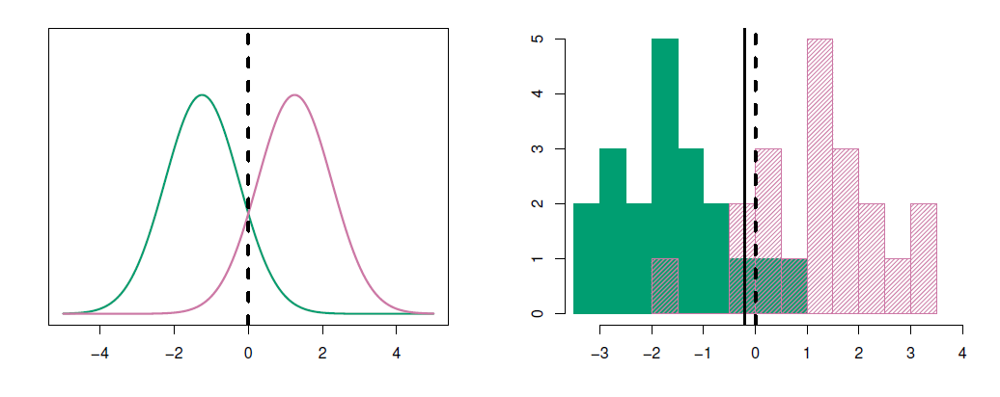
- Typically we don’t know these parameters; we just have the training data.
- In that case we simply estimate the parameters and plug them into the rule.
\[ \hat{\pi}_k=\frac{n_k}{n} \]
\[ \hat{\mu}_k=\frac{1}{n_k}\sum_{i:y_i=k}x_i \]
\[ \hat{\sigma}^2=\frac{1}{n-K}\sum_{k=1}^K\sum_{i:y_i=k}(x_i-\hat{\mu}_k)^2=\sum_{k=1}^K\frac{n_k-1}{n-K}\cdot \hat{\sigma}_k^2 \]
where \(\hat{\sigma}_k^2=\frac{1}{n_k-1}\sum_{i:y_i=1k}(x_i-\hat{\mu}_k)^2\) is the usual formula for the estimated variance in the \(k\)th class.
Linear discriminant analysis when \(p>1\)
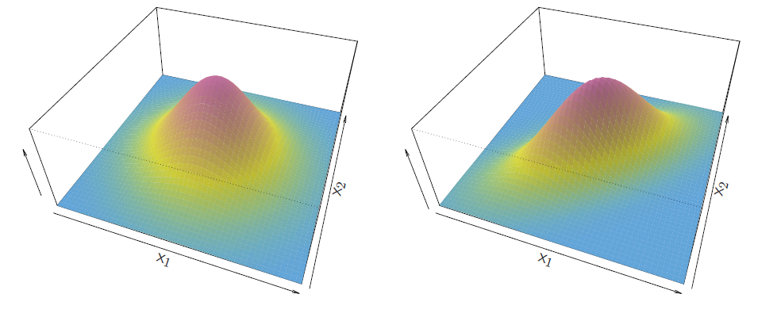
- Multivariate normal density
\[ f(x)=\frac{1}{(2\pi)^{p/2}|\Sigma|^{1/2}}{e^{1\frac{1}{2}(x-\mu)^T\Sigma^{-1}(x-\mu)}} \]
- If the random variable \(X\) is multivariate normal or Gaussian, and has in all groups the covariance matrices \(\Sigma\) the same, so that \(X \sim N(\mu_k, \Sigma)\) in group \(k = 1, \ldots, K\), then (note that \(\pi\) in the normal density is the number \(3.14\ldots\) , while \(\pi_k\) s denote prior probabilities)
\[ p(k|x) = \frac{\pi_k\frac{1}{(2\pi)^{p/2}|Σ|^{1/2}} exp\Big(\frac{1}{2}(x-\mu_k)^T{\Sigma}^{-1}(x-\mu_k)\Big)}{\sum_{j=1}^{K}\pi_{j}f(j|x)} \]
- Taking logarithm
\[ log \ p(k|x) =\frac{1}{2}(x-\mu_k)^T{\Sigma}^{-1}(x-\mu_k)+log \ \pi_k + const \]
in which \(const = −(p/2) log(2\pi) − (1/2) log |\Sigma| − log(\sum_{j}\pi_{j}f (j|x))\) does not depend on \(k\).
- Dropping the constant and doing little algebra, we have a Bayes classifier by assigning the observation with \(x\) to the class for which
\[ \delta_k (x) = x^T\Sigma^{-1}\mu_k − \frac{1}{2}\mu^T_k\Sigma^{-1}\mu_k +log \pi_k \]
is largest.
- The function \(\delta_k\) is a linear in \(X\) , therefore \(\delta_k(X)\) is called a linear
discriminant function.
- The Bayes decision boundaries are defined by \(\delta_k (x) = \delta_l(x)\) for \(k \neq l\).
- The figure below illustrates Bayes decision boundaries in the case of \(K = 3\) classes, \(p = 2\) variables, and \(\pi_k = 1/3\), \(k = 1, 2, 3\).
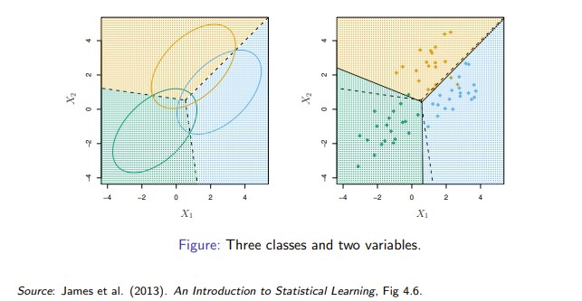
Gaussian distributions in three groups with common covariance matrix. Ellipses contain 95% of observations, dashed lines are Bayesian decision boundaries, and solid lines in the right hand panel are estimated Bayesian decision boundaries from samples of 20 (simulated) observations from each group.
Bayes decision boundaries were known, they would yield the fewest misclassification errors, among all possible classifiers.
Fisher’s Iris Data
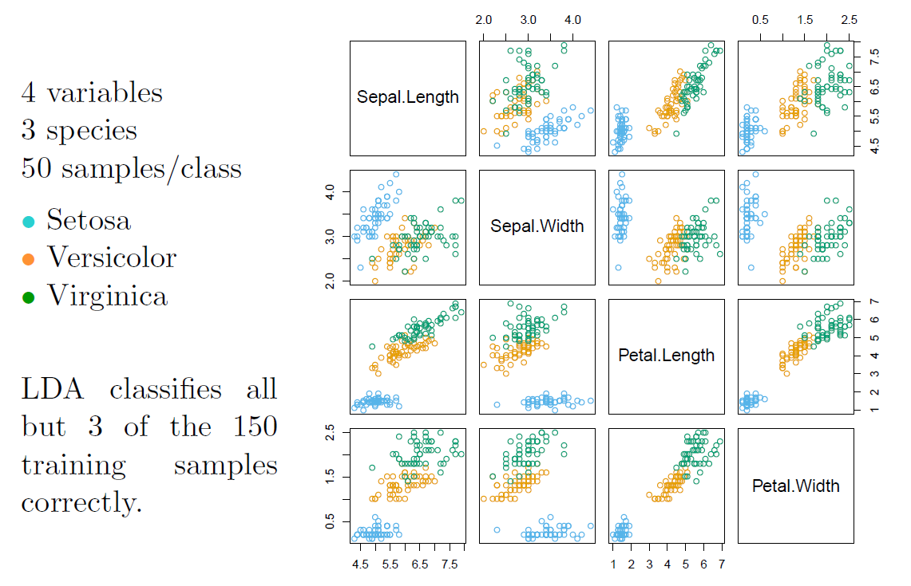
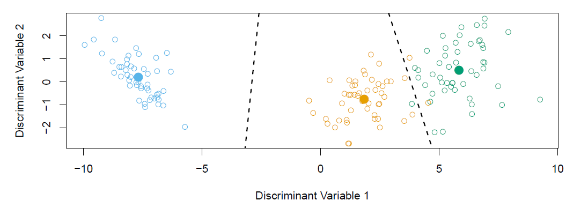
When there are \(K\) classes, linear discriminant analysis can be viewed exactly in a \(K-1\) dimensional plot.
- Why? Because it essentially classifies to the closest centroid, and they span a \(K-1\) dimensional plane.
- Even when \(K>3\), we can find the “best” 2-dimensional plane for visualizing the discriminant rule.
The unknown parameters \(\mu_k\), \(\Sigma\), and \(\pi_k\) are estimated from the training (sample) data by sample means of \(X\)-variables, \(\bar{x}_k\), common sample covariance matrix, \(S\), and \(\hat{\pi}_k = n_k /n\), the fraction of observations in group \(k\).
The pooled sample covariance matrix \(S\) is computed as
\[ S = \frac{1}{n}\sum_{k=1}^{K}W_k \]
where
\[ W_k = \sum_{i=1}^{n_k}(x_{ik} − \bar x_k)(x_{ik} − \bar x_k)^T \]
is a multiple of the within covariance matrix \(S_k = W_k /n_k\).
Alternatively in place of \(n\) is often used \(n − K\) in order to make \(S\) unbiased (for the same reason in \(S_k\) the divisor is replaced by \(n_k − 1\)).
Once we have estimates \(\hat{\delta}_k(x)\), we can turn these into estimates for class probabilities:
\[ \hat{Pr}(Y=k|X=x)=\frac{e^{\hat{\delta}_k(x)}}{\sum_{l=1}^K e^{\hat{\delta}_l(x)}} \]
So classifying to the largest \(\hat{\delta}_k(x)\) amounts to classifying to the class for which \(\hat{Pr}(Y=k|X=x)\) is largest.
When \(K=2\), we classify to class 2 if \(\hat{Pr}(Y=2|X=x)\ge 0.5\) else to class 1.
LDA on Credit data
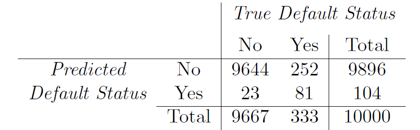
(24+252)/10000 errors - a 2.75/% misclassification rate!
Some caveats:
- This is training error, and we may be overfitting. Not a big concern here since \(n=10000\) and \(p=1\)!
- If we classified to the prior - always to class No in this case - we would make 333/10000 errors, or only 3.33/%.
- Of the true No’s, we make 23/96667=0.2/% errors; of the true Yes’s, we make 252/333=75.7/% errors!
Types of errors
False positive rate: The fraction of negative examples that are classified as positive - 0.2/% in example.
False negative rate: The fraction of positive examples that are classsified as negative - 75.7/% in example.
We produced this table by classifying to class Yes if
\[ \hat{Pr}(Default=Yes|Balance, Student)\ge 0.5 \]
- We can change the two error rates by chaning the threshold from 0.5 to some other value in [0,1];
\[ \hat{Pr}(Default=Yes|Balance, Student)\ge threshold \]
and vary threshold.
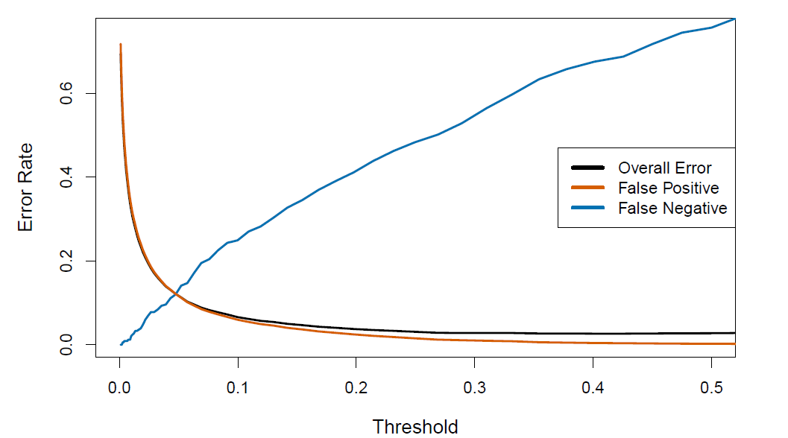
- In order to reduce the false negative rate, we may want to reduce the threshold to 0.1 or less
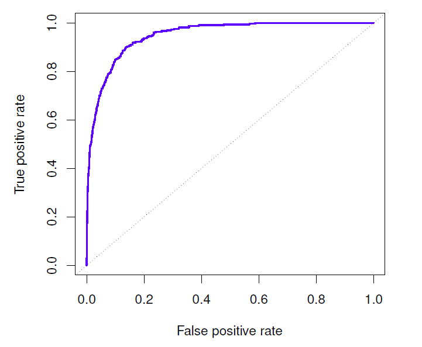
The ROC plot displays both simultaneously.
Sometimes we use the AUC or area under the curve to summarize the overall performance.
- Higher AUC is good.
Remark
- In particular in the two-group case (\(K = 2\)), considering the log-odds ratio of the posterior probabilities and using the right hand side of the linear discrimanant function,
\[ log \Big(\frac{p(k = 1|x)}{1 − p(k = 1|x)}\Big) = a + b^Tx \]
where
\[ a = \frac{1}{2} (\mu_2^TΣ^{−1}\mu_2 − \mu_1^TΣ^{−1}\mu_1) + log \ (\pi_1/\pi_2) \]
and
\[ b = Σ^{−1}(\mu_1 − \mu_2) \]
I.e., coincides with the linear logit-model. - The difference is in the underlying assumptions. - LDA relies on normal distribution with common variance, while logit-model does not. - As a results even in this linear case logit-model can be assumed to be more flexible, while if the normal assumption with a common covariance matrix holds, LDA based classification can be expected to perform better.
Remark
- The LDA in equation can be enhanced with quadratic and higher terms as well as other transformations of \(X\)-variables.
- This just amounts to enhancing the \(X\) vector with transformed variables.
- However, the normality assumption of these transformed variables does not hold any more.
- The bottom line is that in the two-group case the major difference between LDA and logit (probit) model is the estimation of the parameters (due to the different underlying assumptions).
Example
- Use the (artificial) Default data set in the ISLR2 library.
- A few first lines of the total of 10,000 observations, fractions of defaulted in the sample, defaulted according to student non-student classes, and Box plots of balance and income in the defaulted and non-defaulted classes
library(ISLR2) # load ISLR library
library(MASS) # linear discriminant analysis etc
head(Default) # A few first lines from the Default data set## default student balance income
## 1 No No 729.5265 44361.625
## 2 No Yes 817.1804 12106.135
## 3 No No 1073.5492 31767.139
## 4 No No 529.2506 35704.494
## 5 No No 785.6559 38463.496
## 6 No Yes 919.5885 7491.559str(Default) # Structure of the data frame## 'data.frame': 10000 obs. of 4 variables:
## $ default: Factor w/ 2 levels "No","Yes": 1 1 1 1 1 1 1 1 1 1 ...
## $ student: Factor w/ 2 levels "No","Yes": 1 2 1 1 1 2 1 2 1 1 ...
## $ balance: num 730 817 1074 529 786 ...
## $ income : num 44362 12106 31767 35704 38463 ...##
## some preliminary results
table(Default$default) # number dealted and non-defaulted in the sample##
## No Yes
## 9667 333summary(Default) # summary statistics for the variable in the data frame## default student balance income
## No :9667 No :7056 Min. : 0.0 Min. : 772
## Yes: 333 Yes:2944 1st Qu.: 481.7 1st Qu.:21340
## Median : 823.6 Median :34553
## Mean : 835.4 Mean :33517
## 3rd Qu.:1166.3 3rd Qu.:43808
## Max. :2654.3 Max. :73554tb <- table(Default[, c("student", "default")]) # cross-table for students and defaulted
round(100 * tb / c(sum(tb[1, ]), sum(tb[2, ])), digits = 2) # percents rounded to two digts## default
## student No Yes
## No 97.08 2.92
## Yes 95.69 4.31par(mfrow = c(1, 2))
plot(x = Default$default, y = Default$balance, col = c("light green", "light blue"),
xlab = "Default", ylab = "Balance") # Box plots
plot(x = Default$default, y = Default$income, col = c("light green", "light blue"),
xlab = "Default", ylab = "Income")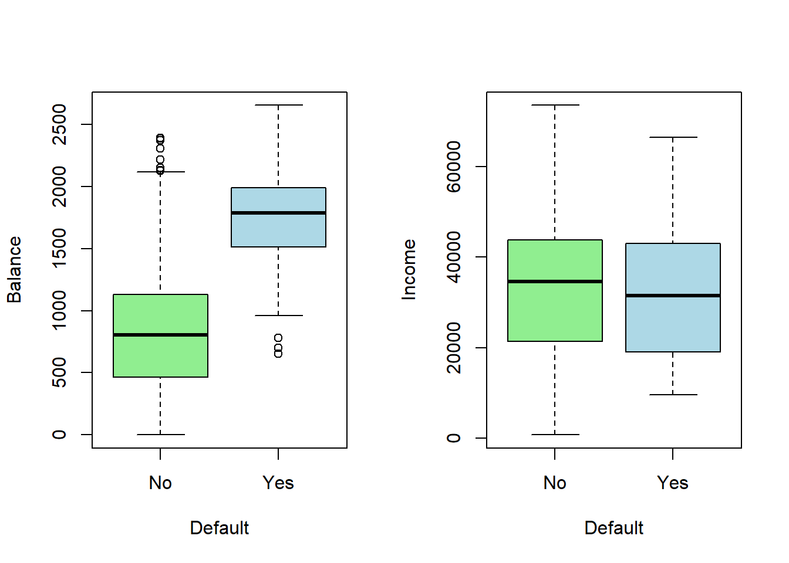
The interest is to find a classifier to identify default-risk customers.
On the basis of the figure, balance obviously is related to default.
Students seem to default a bit higher percentage.
Income also tends to be lower among defaulted.
It may be noted that even null classifier by which we trivially classify all customers non-defaulted, the error rate in the training sample is only 3.33 %. However, them among the defaulted (the main concern of the credit card company), the error rate is 100%.
Using the logit model with student status and balance as explanatory variable produces estimates:
contrasts(Default$default) # show which one of default values is set to 1 (here it is "Yes", defaulted.## Yes
## No 0
## Yes 1fit.logit <- glm(default ~ student + balance, data = Default, family = binomial(link = logit))
summary(fit.logit)##
## Call:
## glm(formula = default ~ student + balance, family = binomial(link = logit),
## data = Default)
##
## Deviance Residuals:
## Min 1Q Median 3Q Max
## -2.4578 -0.1422 -0.0559 -0.0203 3.7435
##
## Coefficients:
## Estimate Std. Error z value Pr(>|z|)
## (Intercept) -1.075e+01 3.692e-01 -29.116 < 2e-16 ***
## studentYes -7.149e-01 1.475e-01 -4.846 1.26e-06 ***
## balance 5.738e-03 2.318e-04 24.750 < 2e-16 ***
## ---
## Signif. codes: 0 '***' 0.001 '**' 0.01 '*' 0.05 '.' 0.1 ' ' 1
##
## (Dispersion parameter for binomial family taken to be 1)
##
## Null deviance: 2920.6 on 9999 degrees of freedom
## Residual deviance: 1571.7 on 9997 degrees of freedom
## AIC: 1577.7
##
## Number of Fisher Scoring iterations: 8- Training sample classification results.
- A confusion matrix (known also as error matrix) summarizes numbers of correct and incorrect classifications.
pred.logit <- predict(fit.logit, type = "response") # probabilities for default status "Yes"
head(pred.logit) # show a few predictions## 1 2 3 4 5 6
## 0.0014090960 0.0011403179 0.0100571943 0.0004469571 0.0019434977 0.0020503778default.logit <- as.factor(ifelse(pred.logit > .5, "Yes", "No")) # predicted defaults statuses
head(default.logit) # a few first## 1 2 3 4 5 6
## No No No No No No
## Levels: No Yestable(default.logit) # n of predicted default and non default## default.logit
## No Yes
## 9856 144## Confusion matrix, i.e., table for predicted vs true defaults
## Note: surrounding assignments x <- y in parenthesis performs the assignment and prints the results
(tbl.logit <- table(data.frame(pred = default.logit, true = Default$default)))## true
## pred No Yes
## No 9628 228
## Yes 39 105## Training error rates
sum(Default$default != default.logit) # training sample n of false classifications## [1] 267100 * mean(Default$default != default.logit) # % training error rate## [1] 2.67##
##
#help(lda) # some help for lda function in MASS
fit.lda <- lda(formula = default ~ student + balance, data = Default)
fit.lda ## Call:
## lda(default ~ student + balance, data = Default)
##
## Prior probabilities of groups:
## No Yes
## 0.9667 0.0333
##
## Group means:
## studentYes balance
## No 0.2914037 803.9438
## Yes 0.3813814 1747.8217
##
## Coefficients of linear discriminants:
## LD1
## studentYes -0.249059498
## balance 0.002244397pred.lda <- predict(fit.lda, type = "response") # produces object containing posterior probabilities etc,
default.lda <- as.factor(ifelse(pred.lda$posterior[, "Yes"] > .5, "Yes", "No"))
head(default.lda)## 1 2 3 4 5 6
## No No No No No No
## Levels: No Yeshead(pred.lda$posterior)## No Yes
## 1 0.9968680 0.003131975
## 2 0.9971925 0.002807531
## 3 0.9843970 0.015603046
## 4 0.9987769 0.001223133
## 5 0.9959254 0.004074582
## 6 0.9954627 0.004537289## Confusion matrix
(tbl.lda <- table(data.frame(pred = default.lda, true = Default$default)))## true
## pred No Yes
## No 9644 252
## Yes 23 81The training error rates (39 + 228)/10,000 = 2.67% for logit and (23 + 252)/10,000 = 2.75% for LDA look pretty low.
- However, recall that with the null classifier we would reach also a small rate of 3.33%.
- Also, training error tend to give too optimistic predictions.
- So, even if the test errors were reliable, the total error rates do not look here very informative.
From the tables we see, that the logit model labels 39 out of the total of not defaulted 9,667 (i.e., 0.4%) incorrectly (lda: 0.2%) as defaulted (“false positive” or “false alarms”), but labels out of the 333 defaulted 228 incorrectly as not defaulted (“false negative”) (lda: 252), or 68.5% (lda: 75.7%)!
- These latter figures are most likely unacceptable from the company point of view.
Class specific performances are sometimes referred to as sensitivity and specificity.
- In machine learning sensitivity refers to probability of detection (“true positive cases”), here true defaulters, i.e., correct detection of defaulted individuals (logit: 105/333 = 31.5%, lda: 81/333 = 24.3%).
- Specificity refers to detection of “true negative cases” , here true non-defaulters, logit: 9,628/9,667 = 99.6% lda: 9,644/9,667 = 99.8%
- 1 - specificity refers to probability of “false alarm” , which in our credit default example means classifying a non-defaulting individual defaulting (specificity, logit: 9, 628/9,667 = 99.6%, lda: 9, 644/9, 667 = 99.8%; “false alarm” 0.4% (logit) and 0.2% (lda)).
The problem is the poor performance in classifying defaults.
- LDA aims to mimic the Bayes classifier that yields the smallest possible total error rate.
Recall, that the Bayesian classifier assigns the observation to the class with highest posterior probability, i.e., in the two-class case to the class with probability > 0.5.
If the concern is incorrectly predicting defaulters, we can catch them better by lowering the posterior probability threshold of default from the 0.5, e.g. down to 0.2, i.e.,
\[ P(default = Yes|X = x) > 0.2 \]
- This gives:
## P(default = Yes | X = x) > .20
default.logit20 <- as.factor(ifelse(pred.logit > .2, "Yes", "No"))
default.lda20 <- as.factor(ifelse(pred.lda$posterior[, "Yes"] > .2, "Yes", "No"))
## Confusion matrices
tbl.logit20 <- table(data.frame(pred = default.logit20, true = Default$default))
tbl.lda20 <- table(data.frame(pred = default.lda20, true = Default$default))
tbl.logit20; rowSums(tbl.logit20)## true
## pred No Yes
## No 9391 130
## Yes 276 203## No Yes
## 9521 479tbl.lda20; rowSums(tbl.lda20)## true
## pred No Yes
## No 9432 138
## Yes 235 195## No Yes
## 9570 430## total training error
mean(default.logit20 != Default$default) # logit## [1] 0.0406mean(default.lda20 != Default$default) # lda## [1] 0.0373## Sensitivity (percents of correctly classified defaulters)
round(100*tbl.logit20[2, 2] / sum(tbl.logit20[, 2]), digits = 1)## [1] 61round(100*tbl.lda20[2, 2] / sum(tbl.lda20[, 2]), digits = 1)## [1] 58.6## Specificity (fractions of correctly classified non-defaulters
round(100*tbl.logit20[1, 1] / sum(tbl.logit20[, 1]), digits = 1)## [1] 97.1round(100*tbl.lda20[1, 1] / sum(tbl.lda20[, 1]), digits = 1)## [1] 97.6- The resulting training error rates and correct classification rates
- Total: logit 4.06%, LDA 3.73%
- Sensitivity (correctly defaulted): logit 61.0%, LDA 58.6%
- Specificity (correctly not defaulted): logit 97.1%, LDA 97.6%
- Thus, there is relatively small increase in total error rate, whereas
identifying defaulters improves materially.
- However, this does not come without a cost: Correctly identified non-defaulters decrease (logit: 99.6% → 97.1%, lda: 99.8% → 97.6%).
- The card company need to balance with these in order to minimize losses.
- Figure below illustrates the trade-off as the posterior is changed.
true.dflt <- Default$default # copy for ease
pr <- seq(0, 1, length = 1000) # the whole range of posterior probability tresholds
sens.lgt <- sens.lda <- double(length(pr)) # vectors for logit and lda sensitivities
spec.lgt <- spec.lda <- double(length(pr)) # vectors for specifities
er.tot.lgt <- er.tot.lda <- double(length(pr)) # tota error rate vectors
for (i in 1:length(pr)) {
dlgt <- factor(ifelse(pred.logit > pr[i], "Yes", "No"), levels = c("Yes", "No")) # logit defaults
dlda <- factor(ifelse(pred.lda$posterior[, "Yes"] > pr[i], "Yes", "No"), levels = c("Yes", "No")) # lda
sens.lgt[i] <- mean(dlgt[true.dflt == "Yes"] == "Yes") # logit sensitivities (identified true defaulters)
sens.lda[i] <- mean(dlda[true.dflt == "Yes"] == "Yes") # lda sensitivities
spec.lgt[i] <- mean(dlgt[true.dflt == "No"] == "No") # logit specificities (true non-defaulters identified)
spec.lda[i] <- mean(dlda[true.dflt == "No"] == "No") # lda specificities
er.tot.lgt[i] <- mean(dlgt != true.dflt) # logit total error rate
er.tot.lda[i] <- mean(dlda != true.dflt) # lda total error rate
} # for p
par(mfrow = c(1, 1)) # reset full window
plot(x = pr, y = 1 - sens.lgt, ylim = c(0, 1), type = "l", col = "red", lty = "dashed", lwd = 3,
xlab = "Posterior Threshold", ylab = "Error Rate")
lines(x = pr, y = 1 - sens.lda, col = "blue", lty = "dashed", lwd = 3)
lines(x = pr, y = er.tot.lgt, col = "red", lty = "solid")
lines(x = pr, y = er.tot.lda, col = "blue", lty = "solid")
legend(x = .04, y = 1, legend = c("Rate of missed defaults (logit)",
"Rate of missed defaults (lda)",
"Total error rate (logit)",
"Total error rate (lda)"),
col = c("red", "steel blue", "red", "steel blue"),
lty = c("dashed", "dashed", "solid", "solid"),
lwd = c(3, 3, 1, 1), bty = "n")
Default error rate indicates the rate of assigning defaulted individuals not defaulted in the training sample.
The appropriate error rate must be defined by the credit card company (analyzing costs incurred by the error classifications).
Both error rates (defaulted mis-classified as non-defaulted; non-defaulted mis-classified as defaulted) can be simultaneously displayed by the ROC curve for different posterior probability thresholds.
- The ROC is acronym for receiver operating characteristic coming from communications theory (see Wiki, https://en.wikipedia.org/wiki/Receiver operating characteristic, for general description).
- The ROC is a plot of true positive rate (TPR) against the false positive rate (FPR)
- Positive and negative rates stem from testing a medical condition in which a positive result signals presence of a disease while negative results signals no disease.
- True positive rate (TPR) equals sensitivity (probability of detection) and false positive rate (FPR) false alarm = 1 - specificity.
- The overall performance of a classifier is given by the area under the (ROC) curve (AUC) over all possible thresholds.
- The closer AUC is one the better the classifier.
- AUC of 0.5 corresponds classifying by chance.
plot(x = 1 - spec.lgt, y = sens.lgt, type = "l", col = "red",
xlim = c(0, 1), ylim = c(0, 1),
xlab = "False positive rate (Non-defaulted classified as defaulted)",
ylab = "True positive rate (Defaulted classified correctly)",
main = "ROC for the logit classifier")
abline(a = 0, b = 1, col = "gray", lty = "dotted") # 0.5 line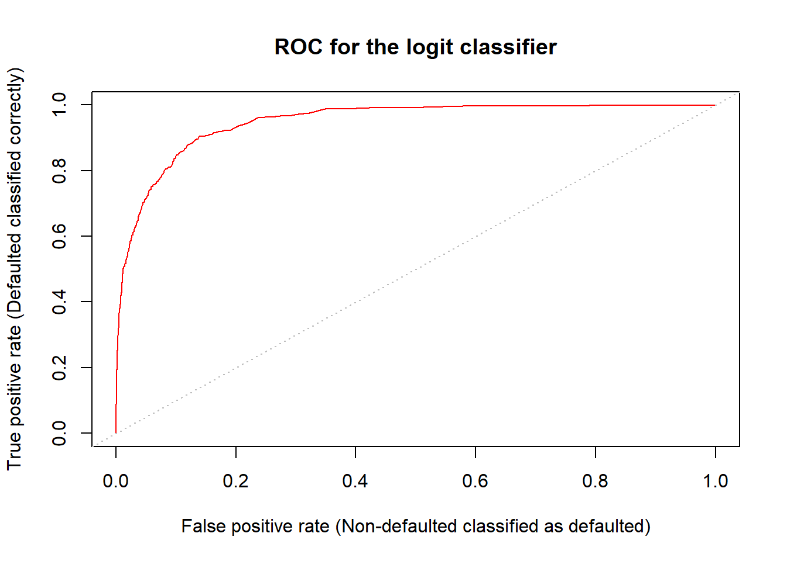
auc.lgt <- auc.lda <- 0 # initialize
for (i in 2:length(spec.lgt)){
auc.lgt <- auc.lgt + abs(spec.lgt[i] - spec.lgt[i-1]) * (sens.lgt[i-1] + sens.lgt[i])/2
auc.lda <- auc.lda + abs(spec.lda[i] - spec.lda[i-1]) * (sens.lda[i-1] + sens.lda[i])/2
}
cat(" AUC logit:", auc.lgt, "\n", "AUC LDA: ", auc.lda, "\n")## AUC logit: 0.9488711
## AUC LDA: 0.9495384auc.lgt <- sum(abs(spec.lgt[-1] - spec.lgt[-length(spec.lgt)]) * (sens.lgt[-length(sens.lgt)] + sens.lgt[-1])/2)
auc.lda <- sum(abs(spec.lda[-1] - spec.lda[-length(spec.lda)]) * (sens.lda[-length(sens.lda)] + sens.lda[-1])/2)
cat(" AUC logit:", auc.lgt, "\n", "AUC LDA: ", auc.lda, "\n")## AUC logit: 0.9488711
## AUC LDA: 0.9495384- For the logit classifier AUC is 94.9%, i.e. very high (for the LDA classifier AUC = 95%).
5.4.3 Quadratic Discriminant Analysis
- LDA is based on the assumption that the covariance matrix is the same in all \(K\) classes.
- Quadratic discriminant analysis (QDA) is based again on normal distribution theory, but gives up the assumption of the same covariance matrices across classes, so that \(X\sim N(\mu_k, \Sigma_k)\), \(k=1,\ldots,K\).
- Under this assumption the Bayes rule assigns and observation \(x\) to the class for which
\[ \delta_k (x) = −\frac{1}{2}x^T\Sigma_k^{-1}x + x^T\Sigma_k^{-1}\mu_k - \frac{1}{ 2} \mu^T_k\Sigma_k^{-1}\mu_k- \frac{1}{2} log|\Sigma_k| + log\pi_k \]
is largest.
- Thus, the QDA involves estimating in addition to the class means also class specific covariance matrices and plug them in to the classification function.
- The classifier is a quadratic function of \(X\), hence the name.
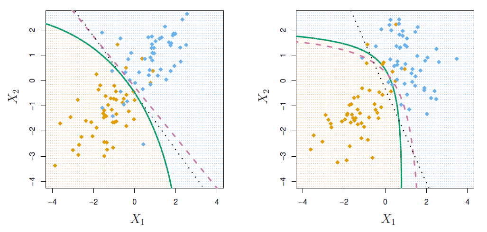
- LDA implies linear decision boundary and QDA produces quadratic decision boundary.
- The number of estimated mean and variance-covariance parameters in LDA is \(Kp + p(p + 1)/2\) which grows in QDA to \(K(p + p(p + 1)/2)\) , i.e., by ( \(K − 1)p(p + 1)/2\).
- Due to this increment QDA need large sample sizes to estimate parameters accurately.
- Because of giving up the equality of covariance matrices, QDA is more flexible than LDA.
- However, in small samples LDA may perform better even in the case of different covariance matrices due to smaller number of estimated parameters (less sampling error).
5.5 Naive Bayes
- LDA and QDA are based on the Bayes’ theorem, i.e.,
\[ P(Y = k|X = x) = \frac{\pi_k f_k (x)}{\sum_{j=1}^{K} \pi_j f_j(x)} \]
The prior probabilities \(\pi_1, \ldots, \pi_K\) are typically fairly straightforwardly obtained.
The difficulty is estimating \(f_k (x)\), \(k = 1,\ldots,K\) as they are multivariate joint densities (or probabilities).
Naive Bayesian approach makes a simplifying approach by assuming the that the random variables \(X_i\)s in \(X = (X1, . . . , Xp)^T\) are independent.
Then joint the distributions \(f_k(x)\), \(k = 1,\ldots,K\) can be represented in terms of the marginal distribution \(f_{kj}(xj)\) of each \(X_j\), \(j = 1,\ldots, p\),
\[ f_k (x) = f_{k1}(x_1) × f_{k2}(x_2) × · · · × f_{kp}(x_p) \]
i.e., as a product of marginal distributions.
This can simplify materially matters.
For example, for QDA, instead of estimating \(Kp\) means and \(K(p + 1)p/2\), covariances and variances, in Naive Bayes one needs to estimate only \(Kp\) means and \(Kp\) variances (e.g., if \(K = 2\) and \(p = 10\), in QDA there \(2 × 10 + 2 × (10 + 1) × 10/2 = 130\) parameters to be estimated compared to \(40\) in Naive Bayes).
Assumes features are independent in each class.
- Useful when \(p\) is large, and so multivariate methods like QDA and even LDA break down.
Gaussian naive Bayes assumes each \(\Sigma_k\) is diagonal:
\[ \delta_k(x) \propto log \big[ \pi_k \Pi_{j=1}^p f_{kj}(x_j) \big]=-\frac{1}{2}\sum_{j=1}^p \big[\frac{(x_j-\mu_{kj})^2}{\sigma_{kj}^2}+log\sigma_{kj}^2 \big] + log\pi_k \]
- Can use for mixed feature vectors (qualitative and quantitative).
- If \(X_j\) is qualitative, replace \(f_{kj}(x_j)\) with probability mass function (histogram) over discrete categories.
- Despite strong assumptions, naive Bayes often produces good classification results.
Logistic regression versus LDA
- For a two-class problem, one can show that for LDA
\[ log(\frac{p_1(x)}{1-p_1(x)})=log(\frac{p_1(x)}{p_2(x)})=c_0 + c_1x_1 + \cdots +c_px_p \]
So it has the same form as logistic regression.
The difference is in how the parameters are estimated.
- Logistic regression uses the conditional likelihood based on \(Pr(Y|X)\) (known as discriminative learning).
- LDA uses the full likelihood based on $Pr(X,Y) (Known as generative learning).
- Despite these differences, in practice the results are often very similar.
Logistic regression can also fit quadratic boundaries like QDA, by explicitly including quadratic terms in the model.
5.6 KNN Classification
KNN classification classifies the new observation with value x according to “majority voice” of \(K\) nearest neighbors in the training data (in the case of tied classes, i.e., two or more classes are equally close, programs like R randomly break the tie).
Note: Here \(K\) refers to the number of nearest neighbors, not the number of classes!
The closeness if computed by an appropriate distance measure (e.g. Euclidian distance).
The function knn() of the class package needs four inputs:
- matrix (or data frame) containing predictors (\(X\) variables) associated with the training data (the first argument, train, in the knn() function call).
- A matrix (or data frame) containing predictors (\(x\) variables) associated with the data the observations of which we wish to classify (the second argument, test, in knn()).
- A vector containing containing class labels for the training observations (the third argument, cl, in knn()).
- value for \(K\) , the number of nearest neighbors to be used by the classifier (the fourth argument, \(k\), in knn()).
5.7 Example
- Predict next stock market direction (Up, Down) on the basis of 5 previous day returns on Helsinki Stock Exchange (OMX Helsinki) by OMXH25 index.
- Sample period is from March 13, 2013 to Dec 30, 2021. Basic return (ret) sample statistics
#install.packages("quantmod")
library(package = "quantmod") # load fImport package
library(class) # base package class has knn function
library(MASS)
### Helsinki OMX 25 index
h25 <- as.data.frame(getSymbols(Symbols = "^OMXH25", # OMX Helsinki 25
from = "2004-01-01", # Starting January 1, 2004 (if available), truns out the first date is 2013-03-05
# data is coersed as a data frame (for convenience)
# Dates are coersed as rownames of the resulting data frame
to = "2021-12-31", # Endin date
env = NULL # returns data to dfr
) # getSynbols
) # as.data.frame## Warning: ^OMXH25 contains missing values. Some functions will not work if
## objects contain missing values in the middle of the series. Consider using
## na.omit(), na.approx(), na.fill(), etc to remove or replace them.h25 <- na.omit(h25) # remove missing values
head(h25) # show a few first lines## OMXH25.Open OMXH25.High OMXH25.Low OMXH25.Close OMXH25.Volume
## 2013-03-05 2351.12 2381.78 2351.12 2378.81 0
## 2013-03-06 2384.10 2391.14 2376.58 2376.75 0
## 2013-03-07 2386.29 2389.44 2370.58 2376.89 0
## 2013-03-08 2379.53 2400.87 2379.53 2388.12 0
## 2013-03-11 2388.33 2388.93 2368.74 2379.26 0
## 2013-03-12 2380.01 2393.99 2380.01 2380.43 0
## OMXH25.Adjusted
## 2013-03-05 2378.81
## 2013-03-06 2376.75
## 2013-03-07 2376.89
## 2013-03-08 2388.12
## 2013-03-11 2379.26
## 2013-03-12 2380.43tail(h25) # show a few last lines## OMXH25.Open OMXH25.High OMXH25.Low OMXH25.Close OMXH25.Volume
## 2021-12-22 5443.45 5472.59 5426.49 5472.59 0
## 2021-12-23 5497.20 5537.14 5496.95 5534.49 0
## 2021-12-27 5522.93 5600.74 5522.93 5584.77 0
## 2021-12-28 5591.05 5627.86 5588.81 5605.85 0
## 2021-12-29 5594.81 5618.91 5563.80 5581.27 0
## 2021-12-30 5576.30 5592.60 5571.37 5571.97 0
## OMXH25.Adjusted
## 2021-12-22 5472.59
## 2021-12-23 5534.49
## 2021-12-27 5584.77
## 2021-12-28 5605.85
## 2021-12-29 5581.27
## 2021-12-30 5571.97# Rename series names
colnames(h25) <- c("open", "high", "low", "close", "vol", "aclose") # change column names
h25$date <- as.Date(x = rownames(h25), format = "%Y-%m-%d") # create R dates from the rownames
h25$vol <- NULL # remove vol as no volume information
## Add returns to data frame. Note the replacement of the first obseravation by missing value NA
h25$ret <- c(NA, 100*(h25$aclose[-1] - h25$aclose[-nrow(h25)]) / h25$aclose[-nrow(h25)])
h25$lag1 <- c(NA, h25$ret[-nrow(h25)])
h25$lag2 <- c(rep(NA, 2), h25$ret[-((nrow(h25)-1):nrow(h25))])
h25$lag3 <- c(rep(NA, 3), h25$ret[-((nrow(h25)-2):nrow(h25))])
h25$lag4 <- c(rep(NA, 4), h25$ret[-((nrow(h25)-3):nrow(h25))])
h25$lag5 <- c(rep(NA, 5), h25$ret[-((nrow(h25)-4):nrow(h25))])
h25 <- na.omit(h25) # remove missing values
h25$dir <- as.factor(ifelse(h25$ret < 0, "Down", "Up")) # directions
rownames(h25) <- NULL # restate row names for convenience
## few first and last lines
head(cbind(h25$date, h25$dir, round(h25[, c("ret", "lag1", "lag2", "lag3", "lag4", "lag5")], digits = 3))) # check the retsults## h25$date h25$dir ret lag1 lag2 lag3 lag4 lag5
## 1 2013-03-13 Down -0.353 0.049 -0.371 0.472 0.006 -0.087
## 2 2013-03-14 Up 0.385 -0.353 0.049 -0.371 0.472 0.006
## 3 2013-03-15 Down -0.418 0.385 -0.353 0.049 -0.371 0.472
## 4 2013-03-18 Down -0.437 -0.418 0.385 -0.353 0.049 -0.371
## 5 2013-03-19 Down -0.078 -0.437 -0.418 0.385 -0.353 0.049
## 6 2013-03-20 Up 0.613 -0.078 -0.437 -0.418 0.385 -0.353tail(cbind(h25$date, h25$dir, round(h25[, c("ret", "lag1", "lag2", "lag3", "lag4", "lag5")], digits = 3))) # check the retsults## h25$date h25$dir ret lag1 lag2 lag3 lag4 lag5
## 2193 2021-12-22 Up 0.830 1.287 -1.422 -0.607 1.184 0.581
## 2194 2021-12-23 Up 1.131 0.830 1.287 -1.422 -0.607 1.184
## 2195 2021-12-27 Up 0.908 1.131 0.830 1.287 -1.422 -0.607
## 2196 2021-12-28 Up 0.377 0.908 1.131 0.830 1.287 -1.422
## 2197 2021-12-29 Down -0.438 0.377 0.908 1.131 0.830 1.287
## 2198 2021-12-30 Down -0.167 -0.438 0.377 0.908 1.131 0.830##
round(summary(h25$ret), digits = 3) # sumary statistc for returns## Min. 1st Qu. Median Mean 3rd Qu. Max.
## -10.128 -0.538 0.071 0.045 0.688 6.892##
round(sd(h25$ret), digits = 3) # return standard deviation## [1] 1.136## correlations
round(cor(h25[, c("ret", "lag1", "lag2", "lag3", "lag4", "lag5")]), digits = 3)## ret lag1 lag2 lag3 lag4 lag5
## ret 1.000 0.044 -0.005 0.031 -0.010 -0.007
## lag1 0.044 1.000 0.044 -0.005 0.031 -0.010
## lag2 -0.005 0.044 1.000 0.044 -0.005 0.031
## lag3 0.031 -0.005 0.044 1.000 0.044 -0.005
## lag4 -0.010 0.031 -0.005 0.044 1.000 0.043
## lag5 -0.007 -0.010 0.031 -0.005 0.043 1.000- ret is today’s (percentage) return, lag1 is yesterday’s return, lag2 is return two days ago, and so forth
We use logit, LDA, QDA, NBayes, and KNN methods to predict directions of the daily returns using returns to the end of 2020 as a training set year 2021 returns as the test set. Below are frequencies of directions in training and test sets
test <- (format(h25$date, format = "%Y") > 2020) # Year 2021 is the test period
train <- !test # training period
## Up and Down pecentages
nrow(h25) # total number of training days## [1] 2198## training sample
summary(h25$dir[train]) # frequencies## Down Up
## 922 1026nrow(h25[train, ]) # n of ttrain observations## [1] 1948round(100*summary(h25$dir[train]) / sum(train), 1) # percentage## Down Up
## 47.3 52.7## test set
summary(h25$dir[test]) # frequencies## Down Up
## 105 145nrow(h25[test, ]) # n of test observations## [1] 250round(100*summary(h25$dir[test]) / sum(test), 1) # percentage## Down Up
## 42 58## 1. training sample logistic estimations
## Logit
contrasts(h25$dir) # check which one of the direction labels is 1, the probability of which is predicted by glm (here logit model)## Up
## Down 0
## Up 1glm.fit <- glm(dir ~ lag1 + lag2 + lag3 + lag4 + lag5,
family = binomial(link = logit), data = h25, subset = train) # training sample
summary(glm.fit) # logit results##
## Call:
## glm(formula = dir ~ lag1 + lag2 + lag3 + lag4 + lag5, family = binomial(link = logit),
## data = h25, subset = train)
##
## Deviance Residuals:
## Min 1Q Median 3Q Max
## -1.532 -1.218 1.061 1.133 1.399
##
## Coefficients:
## Estimate Std. Error z value Pr(>|z|)
## (Intercept) 0.10853 0.04556 2.382 0.0172 *
## lag1 0.05654 0.03933 1.438 0.1506
## lag2 -0.02007 0.03940 -0.509 0.6105
## lag3 0.01332 0.03929 0.339 0.7346
## lag4 -0.04831 0.03951 -1.223 0.2215
## lag5 -0.03762 0.03929 -0.957 0.3384
## ---
## Signif. codes: 0 '***' 0.001 '**' 0.01 '*' 0.05 '.' 0.1 ' ' 1
##
## (Dispersion parameter for binomial family taken to be 1)
##
## Null deviance: 2694.9 on 1947 degrees of freedom
## Residual deviance: 2690.2 on 1942 degrees of freedom
## AIC: 2702.2
##
## Number of Fisher Scoring iterations: 3## LDA
lda.fit <- lda(dir ~ lag1 + lag2 + lag3 + lag4 + lag5,
data = h25, subset = train)
lda.fit # show estimation results## Call:
## lda(dir ~ lag1 + lag2 + lag3 + lag4 + lag5, data = h25, subset = train)
##
## Prior probabilities of groups:
## Down Up
## 0.473306 0.526694
##
## Group means:
## lag1 lag2 lag3 lag4 lag5
## Down 0.002870379 0.05270834 0.03319058 0.072918626 0.06864224
## Up 0.075077291 0.02910391 0.04594629 0.009602557 0.01267777
##
## Coefficients of linear discriminants:
## LD1
## lag1 0.5673811
## lag2 -0.1999142
## lag3 0.1333366
## lag4 -0.4834099
## lag5 -0.3777617## QDA
qda.fit <- qda(dir ~ lag1 + lag2 + lag3 + lag4 + lag5,
data = h25, subset = train)
qda.fit # shows only priors and sample group means## Call:
## qda(dir ~ lag1 + lag2 + lag3 + lag4 + lag5, data = h25, subset = train)
##
## Prior probabilities of groups:
## Down Up
## 0.473306 0.526694
##
## Group means:
## lag1 lag2 lag3 lag4 lag5
## Down 0.002870379 0.05270834 0.03319058 0.072918626 0.06864224
## Up 0.075077291 0.02910391 0.04594629 0.009602557 0.01267777### NBayes with separate variances
### Naive Bayes is in package e1071
## install.packages(pkgs = "e1071", repos = "https://cloud.r-project.org") # install if needed
library(e1071)## Warning: 패키지 'e1071'는 R 버전 4.2.3에서 작성되었습니다nb.fit <- naiveBayes(dir ~ lag1 + lag2 + lag3 + lag4 + lag5, data = h25, subset = train) # fit training data
nb.fit # show estimation results##
## Naive Bayes Classifier for Discrete Predictors
##
## Call:
## naiveBayes.default(x = X, y = Y, laplace = laplace)
##
## A-priori probabilities:
## Y
## Down Up
## 0.473306 0.526694
##
## Conditional probabilities:
## lag1
## Y [,1] [,2]
## Down 0.002870379 1.160224
## Up 0.075077291 1.165455
##
## lag2
## Y [,1] [,2]
## Down 0.05270834 1.127840
## Up 0.02910391 1.194404
##
## lag3
## Y [,1] [,2]
## Down 0.03319058 1.128859
## Up 0.04594629 1.193155
##
## lag4
## Y [,1] [,2]
## Down 0.072918626 1.165713
## Up 0.009602557 1.159927
##
## lag5
## Y [,1] [,2]
## Down 0.06864224 1.147725
## Up 0.01267777 1.175936mean(h25[train & h25$dir == "Down", "lag1"])## [1] 0.002870379sd(h25[train & h25$dir == "Down", "lag1"])## [1] 1.160224mean(h25[train & h25$dir == "Up", "lag1"])## [1] 0.07507729sd(h25[train & h25$dir == "Up", "lag1"])## [1] 1.165455head(h25[train, ])## open high low close aclose date ret lag1
## 1 2381.21 2384.33 2366.79 2372.03 2372.03 2013-03-13 -0.35287336 0.04917168
## 2 2376.36 2385.45 2371.20 2381.16 2381.16 2013-03-14 0.38489745 -0.35287336
## 3 2384.63 2384.98 2368.38 2371.20 2371.20 2013-03-15 -0.41828190 0.38489745
## 4 2338.66 2362.51 2336.75 2360.83 2360.83 2013-03-18 -0.43732596 -0.41828190
## 5 2359.13 2380.13 2352.64 2359.00 2359.00 2013-03-19 -0.07751841 -0.43732596
## 6 2365.53 2376.89 2365.45 2373.46 2373.46 2013-03-20 0.61296994 -0.07751841
## lag2 lag3 lag4 lag5 dir
## 1 -0.37100759 0.47247557 0.005885895 -0.086600399 Down
## 2 0.04917168 -0.37100759 0.472475567 0.005885895 Up
## 3 -0.35287336 0.04917168 -0.371007595 0.472475567 Down
## 4 0.38489745 -0.35287336 0.049171675 -0.371007595 Down
## 5 -0.41828190 0.38489745 -0.352873356 0.049171675 Down
## 6 -0.43732596 -0.41828190 0.384897446 -0.352873356 UpIn each lag-matrix the first column gives the means and the second the standard deviations of the lagged returns in the Down and Up classes.
Below are confusion matrices for the 2018 test data (predictions).
## 2. test sample predictions
glm.probs <- predict(glm.fit, newdata = h25[test, ], type = "response")
lda.probs <- predict(lda.fit, newdata = h25[test, ], type = "response")
qda.probs <- predict(qda.fit, newdata = h25[test, ], type = "response")
nb.probs <- predict(nb.fit, newdata = h25[test, ], type = "raw")
head(nb.probs)## Down Up
## [1,] 0.5108355 0.4891645
## [2,] 0.5001210 0.4998790
## [3,] 0.5215819 0.4784181
## [4,] 0.4506993 0.5493007
## [5,] 0.4234230 0.5765770
## [6,] 0.4206130 0.5793870head(lda.probs$posterior)## Down Up
## 1949 0.4988495 0.5011505
## 1950 0.4789847 0.5210153
## 1951 0.5030180 0.4969820
## 1952 0.4263443 0.5736557
## 1953 0.4900092 0.5099908
## 1954 0.4764840 0.5235160table(predict(nb.fit, newdata = h25[test, ]), h25[test, "dir"])##
## Down Up
## Down 42 58
## Up 63 87dir.test <- h25$dir[test] # 2021 actual directions
glm.test <- as.factor(ifelse(glm.probs > .5, "Up", "Down"))
lda.test <- as.factor(ifelse(lda.probs$posterior[, "Up"] > .5, "Up", "Down"))
qda.test <- as.factor(ifelse(qda.probs$posterior[, "Up"] > .5, "Up", "Down"))
nb.test <- as.factor(ifelse(nb.probs[, "Up"] > .5, "Up", "Down"))
knn.test.k1 <- knn(train = h25[train, c("lag1", "lag2", "lag3", "lag4", "lag5")],
test = h25[test, c("lag1", "lag2", "lag3", "lag4", "lag5")],
cl = h25$dir[train],
k = 1) # knn with K = 1
knn.test.k2 <- knn(train = h25[train, c("lag1", "lag2", "lag3", "lag4", "lag5")],
test = h25[test, c("lag1", "lag2", "lag3", "lag4", "lag5")],
cl = h25$dir[train],
k = 2) # knn with K = 2
knn.test.k3 <- knn(train = h25[train, c("lag1", "lag2", "lag3", "lag4", "lag5")],
test = h25[test, c("lag1", "lag2", "lag3", "lag4", "lag5")],
cl = h25$dir[train],
k = 3) # knn with K = 3
knn.test.k5 <- knn(train = h25[train, c("lag1", "lag2", "lag3", "lag4", "lag5")],
test = h25[test, c("lag1", "lag2", "lag3", "lag4", "lag5")],
cl = h25$dir[train],
k = 5) # knn with K = 5
knn.test.k10 <- knn(train = h25[train, c("lag1", "lag2", "lag3", "lag4", "lag5")],
test = h25[test, c("lag1", "lag2", "lag3", "lag4", "lag5")],
cl = h25$dir[train],
k = 10) # knn with K = 10
#help(knn)
cfm <- matrix(nrow = 3, ncol = 9 * 2 + 1)
colnames(cfm) <- c("lgtDown", "lgtUp", "ldaDown", "ldaUp", "qdaDown", "qdaUp", "nbUp", "nbDown",
"knn1Up", "knn1Down", "knn2Up", "knn2Down", "knn3Up", "knn3Down", "knn5Up", "knn5Down", "knn10Up", "knn10Down",
"Act Total") # column names for the matrix
rownames(cfm) <- c("Actual Down", "Actual Up", "Pred Total")
## collect confusion matrices into one table
cfm[ , 1:2] <- rbind(table(dir.test, glm.test), colSums(table(dir.test, glm.test))) # logit
cfm[ , 3:4] <- rbind(table(dir.test, lda.test), colSums(table(dir.test, lda.test))) # LDA
cfm[ , 5:6] <- rbind(table(dir.test, qda.test), colSums(table(dir.test, qda.test))) # QDA
cfm[ , 7:8] <- rbind(table(dir.test, nb.test), colSums(table(dir.test, nb.test))) # NBayes
cfm[ , 9:10] <- rbind(table(dir.test, knn.test.k1), colSums(table(dir.test, knn.test.k1))) # KNN, K = 1
cfm[ , 11:12] <- rbind(table(dir.test, knn.test.k2), colSums(table(dir.test, knn.test.k2))) # KNN, K = 2
cfm[ , 13:14] <- rbind(table(dir.test, knn.test.k3), colSums(table(dir.test, knn.test.k3))) # KNN, K = 3
cfm[ , 15:16] <- rbind(table(dir.test, knn.test.k5), colSums(table(dir.test, knn.test.k5))) # KNN, K = 5
cfm[ , 17:18] <- rbind(table(dir.test, knn.test.k10), colSums(table(dir.test, knn.test.k10))) # KNN, K = 10
cfm[ , 19] <- c(sum(dir.test == "Down"), sum(dir.test == "Up"), length(dir.test)) # Actual totals
cfm## lgtDown lgtUp ldaDown ldaUp qdaDown qdaUp nbUp nbDown knn1Up
## Actual Down 8 97 7 98 54 51 42 63 54
## Actual Up 11 134 11 134 62 83 58 87 71
## Pred Total 19 231 18 232 116 134 100 150 125
## knn1Down knn2Up knn2Down knn3Up knn3Down knn5Up knn5Down knn10Up
## Actual Down 51 54 51 56 49 53 52 49
## Actual Up 74 65 80 68 77 68 77 63
## Pred Total 125 119 131 124 126 121 129 112
## knn10Down Act Total
## Actual Down 56 105
## Actual Up 82 145
## Pred Total 138 250## percents of correct predicted directions
pcts <- c(mean(glm.test == dir.test), mean(lda.test == dir.test), mean(qda.test == dir.test), mean(nb.test == dir.test),
mean(knn.test.k1 == dir.test), mean(knn.test.k2 == dir.test), mean(knn.test.k3 == dir.test),
mean(knn.test.k5 == dir.test), mean(knn.test.k10 == dir.test),
mean(dir.test == "Up")) # the last one is percentage of correct prediction of a "Null" classifier that predicts always "Up".
names(pcts) <- c("Logit", "LDA", "QDA", "NBayes", "KNN K=1", "KNN K=2", "KNN K=3", "KNN K=5", "KNN K=10", "Null") # for printing
round(100 * pcts, digits = 1) # show results in percents rounded to 1 decimal## Logit LDA QDA NBayes KNN K=1 KNN K=2 KNN K=3 KNN K=5
## 56.8 56.4 54.8 51.6 51.2 53.6 53.2 52.0
## KNN K=10 Null
## 52.4 58.0### Error rates:
## Total error rates: Misclassifcation percentages
round(100 * (1 - pcts), digits = 1)## Logit LDA QDA NBayes KNN K=1 KNN K=2 KNN K=3 KNN K=5
## 43.2 43.6 45.2 48.4 48.8 46.4 46.8 48.0
## KNN K=10 Null
## 47.6 42.0## Error rates in predicting Down directions
down.errors <- cfm[1, seq(from = 2, to = 18, by = 2)] / cfm[1, ncol(cfm)] # pick up "Down" columns from the table
names(down.errors) <- c("Logit", "LDA", "QDA", "NBayes", "KNN 1", "KNN 2", "KNN 3", "KNN 5", "KNN 10") # name the elements
round(100 * down.errors, digits = 1)## Logit LDA QDA NBayes KNN 1 KNN 2 KNN 3 KNN 5 KNN 10
## 92.4 93.3 48.6 60.0 48.6 48.6 46.7 49.5 53.3## Error rates of predicting Up directions
up.errors <- cfm[2, seq(from = 1, to = 17, by = 2)] / cfm[2, ncol(cfm)] # pick up "Up" columns
names(up.errors) <- c("Logit", "LDA", "QDA", "NBayes", "KNN 1", "KNN 2", "KNN 3", "KNN 5", "KNN 10") # name the columns
round(100 * up.errors, digits = 1)## Logit LDA QDA NBayes KNN 1 KNN 2 KNN 3 KNN 5 KNN 10
## 7.6 7.6 42.8 40.0 49.0 44.8 46.9 46.9 43.4##
## Sensitivity: Here percentage of "true positive cases, i.e. true Up directions" that are identified
snsty <- 1 - up.errors
round(100 * snsty, digits = 1)## Logit LDA QDA NBayes KNN 1 KNN 2 KNN 3 KNN 5 KNN 10
## 92.4 92.4 57.2 60.0 51.0 55.2 53.1 53.1 56.6## Specificity: Here percentage of "true negative cases, i.e., Down directions" that are identified
spcty <- 1 - down.errors
round(100 * spcty, digits = 1)## Logit LDA QDA NBayes KNN 1 KNN 2 KNN 3 KNN 5 KNN 10
## 7.6 6.7 51.4 40.0 51.4 51.4 53.3 50.5 46.7##
## Null classifier, i.e. classify all returns "Up"
##
# Total Error rate
round(100 * mean(dir.test == "Down"), digits = 1) # error rate equals the rate of down directions## [1] 42# Up error rate (percentage of missed actual Up directions) is trivially zero as all predictions are "Up",
# therfore here sensitivity is trivially 100%
# Down error rate (percentage of missed actual Down directions) is trivially 100% as no "Down" predictions,
# therefore specificity is trivially 0%.- According the correct prediction rates
- Logit is the winner with close to 56.8 % correct prediction rate.
- LDA, and QDA close to Logit with percentages 56.4 and 54.8, respectively.
- KNN with \(K = 3\) performs best of the remaining ones, not much better than pure guessing.
- It is notable that in the test period 58 % of the returns were positive, i.e., Up direction. Thus, with the null classifier, predicting continuously Up would have produced 58 % (i.e., the actual Up-percentage in the test period which happens to be the same as that of the training period) rate of correct predictions. Thus, the null classier is the ultimate winner here!!